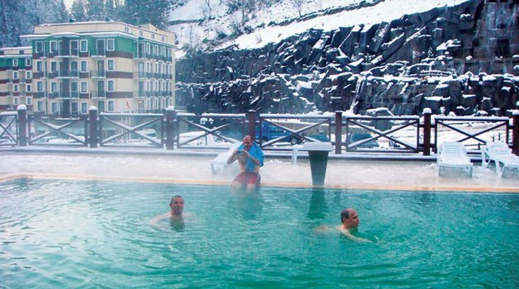
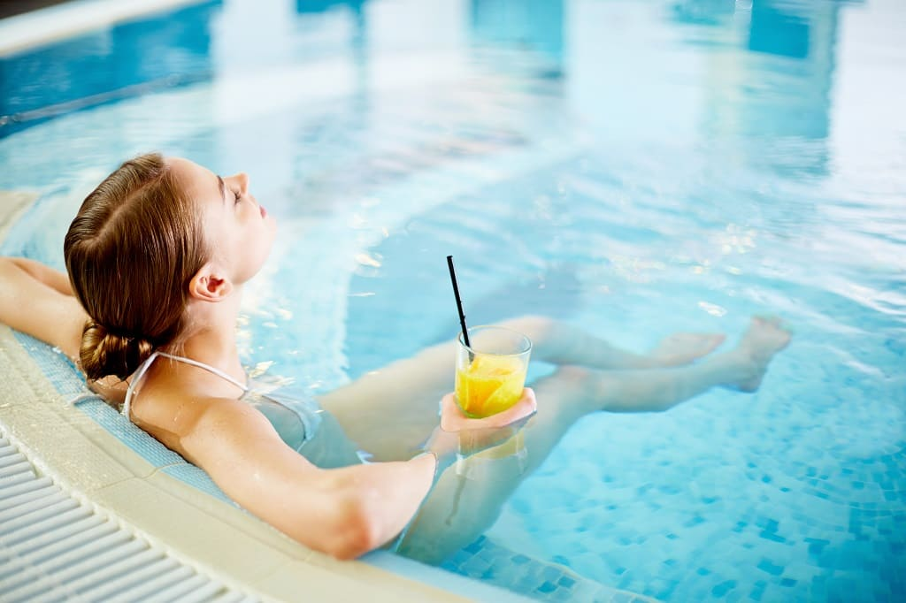

Termal Sağlık Turizmi
Termal turizm, sağlık turizmi içerisinde değerlendirilen, içeriklerinde erimiş mineral bulunanmaden sularının dinlenme, zindeleşme, tedavi vb. amaçlara dönük olarak kullanımındankaynaklanmaktadır. İnsanların yüzyıllardır çeşitli rahatsızlıklarını gidermek için termal sukaynaklarından yararlanma düşüncesi gelenek haline gelmiş olup, bugün daha çağdaş vetıbben uygun ortamlarda sürdürülen bu gelenek, milyonlarca insanı sağlık turizmi bakımındanilgilendirmektedir
 Denizden yararlanılarak insanların kendilerini ruhsal ve bedensel olarak daha sağlıklı hissetmeleri yüzyıllar öncesine dayanmaktadır. Dünya da ve Türkiye’de “Spa & Wellness” merkezleri uluslararası standartlardaki otel zincirlerinde bulunmaktadır. Son yıllarda oldukça popüler olan “Spa&Wellness Turizmi”ne yönelik Türkiye’deki otel işletmeleri de modern donanımlı ve hizmet kalitesi yüksek yatırımlarla dikkat çekmektedirler